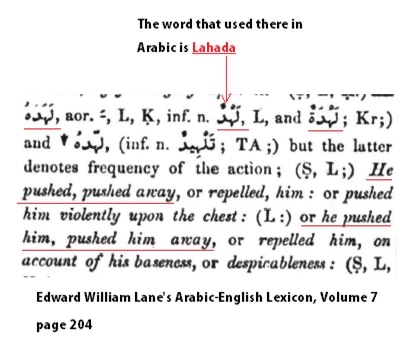
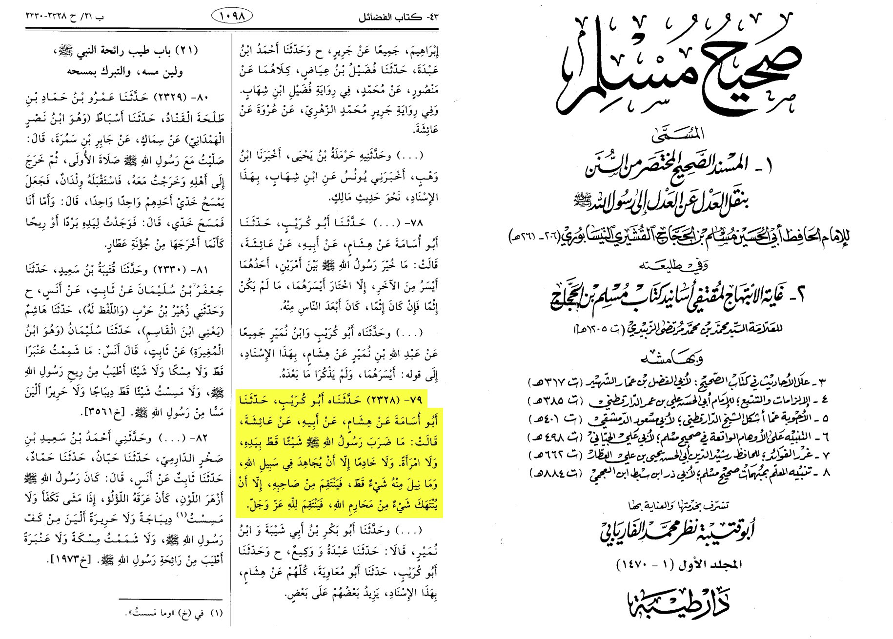
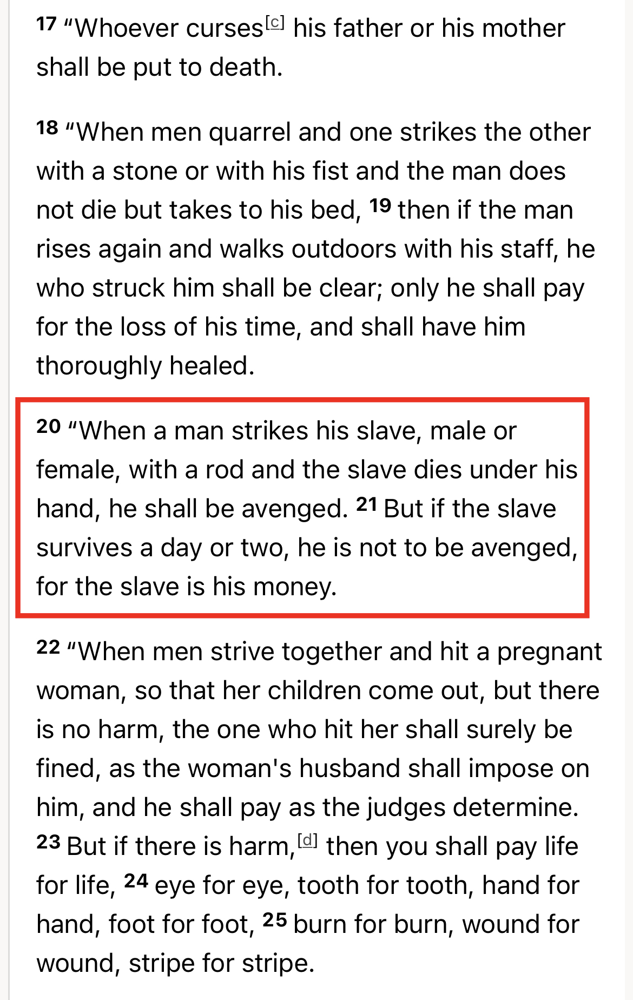

The word that is used in the Hadith as “Struck” is false because the word in Arabic that is used is “Lahada.”
Edward William Lane explains that the Arabic word “Lahada” means “pushed away” rather the [struck/beat/hit] as you see:

Secondly the prophet never beat anyone

A'isha reported that Allah's Messenger (ﷺ) never beat anyone with his hand, neither a woman nor a servant, but only,
in the case when he had been fighting in the cause of Allah and he never took revenge for anything unless the things made inviolable by Allah were made violable;
he then took revenge for Allah, the Exalted and Glorious.
Source: Sahih Muslim 2328a

The Bible affirm that you can beat your slave women and man long as they don’t die because they are your
property. So Christians shouldn’t have a problem with domestic violence
https://m.youtube.com/watch?v=gcDitzaEZkk&t=363s